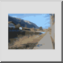

Esta es una traducción automática.
Barra de herramienta / icono:

Menú: Dibujar > Insertar bitmap
Acceso directo: I, M
Comandos: insertbitmap | bitmap | im
Inserta una imagen rasterizada (bitmap) en el dibujo.
Tenga en cuenta que el archivo de dibujo que se crea al guardar el
dibujo, sólo contiene referencias a las imágenes insertadas. Se recomienda
mantener el archivo de imagen y el archivo de dibujo en la misma carpeta, para
que QCAD pueda encontrar la imagen de nuevo cuando el archivo de dibujo se
cargue más tarde.
Se admiten fondos transparentes para imágenes PNG.
Tenga en cuenta que los mapas de bits grandes pueden hacer que la
visualización del dibujo sea muy lenta.
Normalmente querrá que las imágenes estén en el fondo de otras entidades.
Por favor refiérase a la herramienta'
Modificar' -'Enviar al
reverso' para aprender a hacer esto